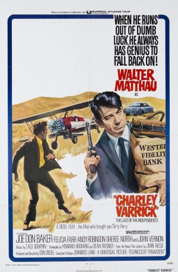

#8574 Der Große Coup
Alternativ: Charley Varrick
Auszeichnungen: 1 BAFTA-Awards gewonnen
 
 IMDB-Wertung: 7.5 / 10
IMDB-Wertung: 7.5 / 10  Metascore: 0
Metascore: 0 
Charley Varrick and his friends rob a small town bank. Expecting a small sum to divide amongst themselves, they are surprised to discover a very LARGE amount of money. Quickly figuring out that the money belongs to the MOB, they must now come up with a plan to throw the MOB off their trail.
Jahr: 1973
Dauer: 110 Minuten
FSK: 16
Land: USA Studio: Universal PicturesTonspuren:
Untertitel:
Auflösung: 720p (1280x696) Größe: 4321 MB
Genre: Action, Thriller, Drama, Krimi
Regisseur: Don Siegel
Drehbuch: Stephan Richter
Soundtrack: Lalo Schifrin
Darsteller:
 Walter Matthau als Charley Varrick
Walter Matthau als Charley Varrick Joe Don Baker als Molly
Joe Don Baker als Molly- Felicia Farr als Sybil Fort
- Andrew Robinson als Harman Sullivan
- Sheree North als Jewell Everett
 Norman Fell als Mr. Garfinkle
Norman Fell als Mr. Garfinkle- Benson Fong als Honest John
 Woodrow Parfrey als Harold Young
Woodrow Parfrey als Harold Young William Schallert als San Miguel Sheriff Bill Horton
William Schallert als San Miguel Sheriff Bill Horton- Jacqueline Scott als Nadine
 Marjorie Bennett als Mrs. Taft
Marjorie Bennett als Mrs. Taft Rudy Diaz als Deputy Sanchez
Rudy Diaz als Deputy Sanchez- Colby Chester als Deputy Steele
- Charles Matthau als Boy
 Hope Summers als Mess Vesta
Hope Summers als Mess Vesta- Monica Lewis als Beverly
 James Nolan als Clerk
James Nolan als Clerk- Tom Tully als Tom
 Albert Popwell als Randolph Percy
Albert Popwell als Randolph Percy Kathleen O'Malley als Jessie
Kathleen O'Malley als Jessie- Christina Hart als Jana
- Craig R. Baxley als Van Sickle
- Don Siegel als Murphy
 John Vernon als Maynard Boyle
John Vernon als Maynard Boyle Bob Steele als Bank Guard (uncredited)
Bob Steele als Bank Guard (uncredited)- Charlie Briggs als Highway deputy
- Priscilla Garcia als Miss Ambar
- Scott Hale als Mr. Scott
- Al Dunlap als Taxi Driver
- Virginia Wing als Chinese Hostess
- Joe Conforte als Himself (uncredited)
- Art Cribbs als Doorman (uncredited)
- Carol Daniels als Indian (uncredited)
- Thomas Dunbar als Announcer (uncredited)
- Richard R. Hogan als Minor Role (uncredited)
- Fred Little als Doorman / Attendant (uncredited)
- Holly Nutter als Holly (uncredited)
- Fred Scheiwiller als Al Dutcher (uncredited)
- Carlos Velasquez als TV News Reporter (uncredited)
- Walt Wallace als Flower Delivery Boy (uncredited)
Datei: X:\1973\Große Coup, Der (1973, FSK16, 1280x696).mkv seit 22.03.2018
Festplatte: HD 1971-1979
 Es gibt insgesamt 30 Filme in der Gruppe '1973'
Es gibt insgesamt 30 Filme in der Gruppe '1973'